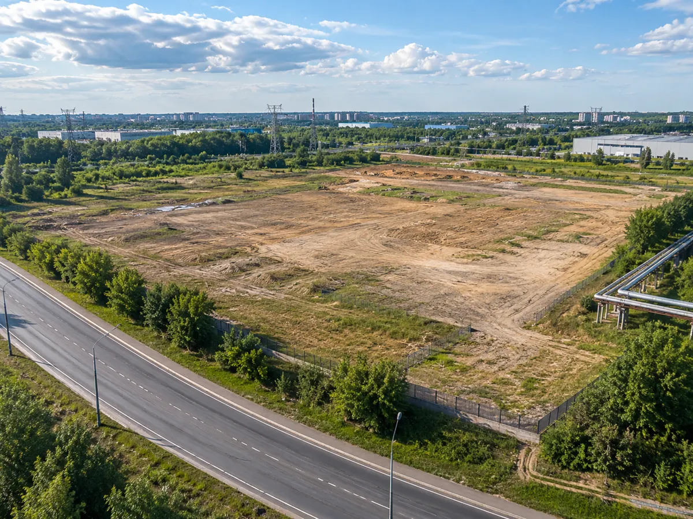

Местоположение
Регион, населённый пункт, ориентиры и транспортная доступность.
Реконструкция, новое строительство или совместная инициатива. Начинаем с понимания площадки, её статуса и задачи собственника.
Даже краткая информация помогает определить, какие компетенции понадобятся.
Регион, населённый пункт, ориентиры и транспортная доступность.
Участок, здание, реконструкция или территория для развития.
Размеры, ограничения и известные инженерные условия.
Форма владения и наличие документов, которые можно обсудить.
Продажа, девелопмент, совместное освоение или реконструкция.
Кто представляет предложение и как связаться.
Конфиденциальные данные, документы о правах и подробные сведения передаются только после согласования адресата и условий обмена.
Опишите местоположение, примерную площадь и задачу. Дальнейший порядок обсудим лично.
Передача предложения не означает обязательства консорциума приобрести или освоить объект.

Территория с подъездными путями и возможностью развития